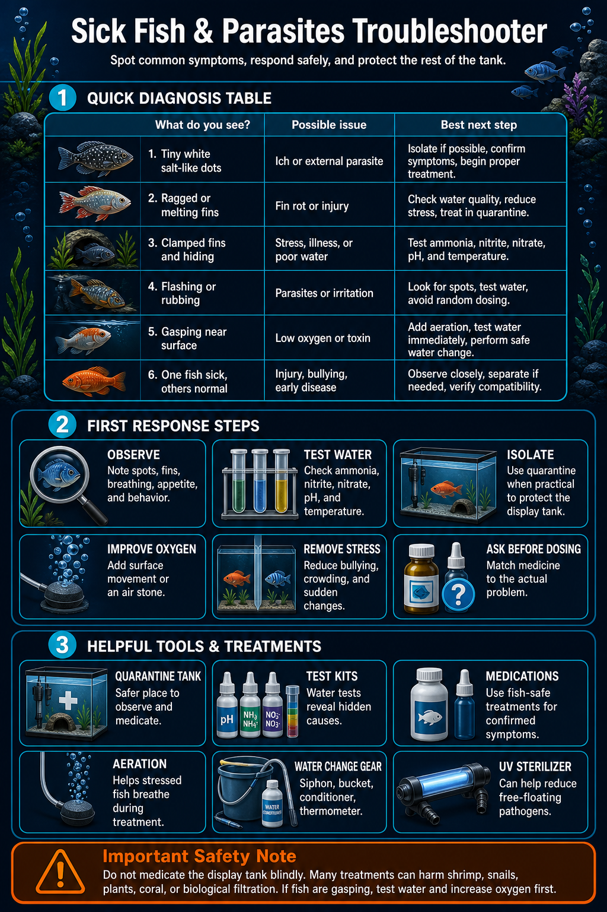

1
Water test
Check ammonia and nitrite first.
Burned gills and poisoning can look like disease. Positive ammonia or nitrite changes the plan immediately.
 The Hidden ReefAquariums · Fish · Coral · Ponds
The Hidden ReefAquariums · Fish · Coral · Ponds
White spots, flashing, clamped fins, heavy breathing, and scratching can come from parasites, stress, or water quality. Check the basics first, then choose treatment based on symptoms and livestock safety.
The safest first move is to separate symptoms from water-quality emergencies.
Burned gills and poisoning can look like disease. Positive ammonia or nitrite changes the plan immediately.
Add aeration or aim flow at the surface if fish are breathing hard, crowding filters, or hanging near the top.
Medication is easier and safer in a bare treatment tank, especially with shrimp, snails, plants, coral, or live rock.
The symptom pattern matters more than a single white mark.
Multiple tiny white spots that look like salt grains, especially with scratching, are a classic ich warning.
A powdery coating with rapid breathing can be more urgent than ordinary ich. Ask for help quickly.
Scratching can come from parasites, chlorine exposure, ammonia, pH swings, or debris irritating the gills.
These are warning signs, but they do not identify the disease. Combine them with tests and visible symptoms.
Damage after parasites or poor water may need a different treatment path than ich alone.
Treat this as urgent water quality, oxygen, temperature, toxin, or fast-moving parasite risk.
Use this before choosing medication or treating the whole tank.
Most sick-fish cases combine exposure, stress, and water conditions.
New fish can bring parasites before symptoms are obvious. Quarantine catches problems before the display is exposed.
Shipping, bullying, temperature swings, and poor acclimation can make fish more vulnerable to parasites.
Bad water can mimic disease and makes any real infection harder for fish to survive.
Temperature swings stress fish and can change how quickly parasite life cycles move.
Fish that are chased, nipped, or overcrowded often show illness first because they cannot recover between stress events.
Guessing can delay the right fix and harm sensitive livestock. Identify the symptom pattern before dosing.
Start with diagnosis and safe treatment, not random medication stacking.
These separate water emergencies from true disease and guide whether water changes come before medication.
Shop maintenanceA simple bare tank, heater, air-driven sponge filter, and cover make treatment cleaner and safer.
View aquariumsSick fish and medicated tanks often need extra oxygen support.
View filtrationChoose medication based on freshwater, saltwater, reef safety, and livestock sensitivity.
Shop maintenanceUV can help reduce free-floating organisms when sized correctly, but it does not replace treatment.
View UV clarifiersClear photos, short video, and careful isolation help the store identify the problem faster.
Shop maintenanceDo not mix multiple medications, dose reef displays blindly, or treat before checking ammonia and nitrite. Remove carbon only when the medication instructions call for it, and keep oxygen high during treatment.
Compare with the cloudy water guide